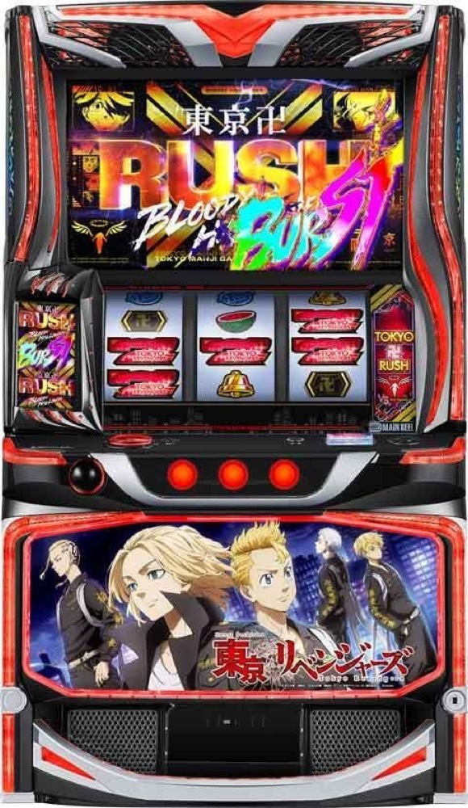

スマスロ 東京リベンジャーズ
初当りから東卍CHANCE／東卍RUSHへ。3Gバトルと8択報酬を重ね、純増約8.0枚/Gの上位を目指す。
- 導入
- 2025年9月
- メーカー
- サミー
- 分類
- パチスロ
主要スペック
東卍CHANCE、3GのBREAK CHANCE、差枚数管理の東卍RUSH、一触即発、東卍ATTACK、リベンジチャンス、東卍RUSH BURST、天上天下唯我独尊、黒い衝動までを機種専用進行で再現します。
- 初当りの約60%がATにつながる設計
- 一触即発は約1/51・3G・平均勝利約40%
- 上位は純増約8.0枚/G・継続約80%
スマスロ 東京リベンジャーズの見どころと計算条件
東卍CHANCE、3GのBREAK CHANCE、差枚数管理の東卍RUSH、一触即発、東卍ATTACK、リベンジチャンス、東卍RUSH BURST、天上天下唯我独尊、黒い衝動までを機種専用進行で再現します。
東京リベンジャーズを数字で早分かり
東卍CHANCE、3GのBREAK CHANCE、差枚数AT、3Gバトル、8択報酬、上位CZと上位ループを機種専用で記録します。
30秒で分かる東京リベンジャーズ
初期差枚を3Gで決め、約1/51の3Gバトルと8択報酬から上位CZを目指す差枚数管理ATです。
こんな遊び方に向いている
- 一触即発の対戦相手別ジャッジを楽しみたい
- 東卍ATTACKの報酬をPUSHで開きたい
- 約80%の上位ループと黒い衝動を狙いたい
遊ぶ前に確認したいこと
- 東卍CHANCEは20G・AT期待度約20%
- 一触即発は約1/51・平均勝利約40%
- 未公表の報酬選択率は体験用代表値
初当りから東卍RUSHまで
初当りは設定1約1/282.4〜設定6約1/240.1、東卍RUSHは約1/482.2〜約1/373.1です。初当りの約60%がATにつながる全体値に合わせ、AT直撃と20Gの東卍CHANCEを分けて表示します。
東卍CHANCEは純増約3.2枚/G、AT期待度約20%。非突破でも獲得枚数を残して結果へ進みます。
BREAK CHANCEと差枚数AT
AT開始時のBREAK CHANCEは3G。毎ゲーム50枚以上を獲得し、合計150枚以上の初期差枚を決めます。
東卍RUSHは純増約3.2枚/Gの差枚数管理。残り差枚を減らしながら直乗せ、一触即発、東卍ATTACKを抽選します。
一触即発と東卍ATTACK
一触即発は約1/51で出現する3Gバトル。平均勝利期待度は約40%で、武道・千冬・三ツ谷・ドラケン・マイキーごとの公開期待度を反映します。
勝利後の東卍ATTACKは8個の報酬候補を進めるゾーン。差枚数上乗せ、Episode、HEAT UP、渋谷JACK、リベンジチャンスを一つのPUSHで開きます。8回目はリベンジチャンス濃厚として扱います。
リベンジチャンスと上位ループ
リベンジチャンスは5G、成功期待度約50%。成功後は純増約8.0枚/Gの東卍RUSH BURSTへ進みます。
上位区間後の天上天下唯我独尊は5G、成功期待度約80%。成功で上位を継続し、一部で黒い衝動へ入ります。
黒い衝動
黒い衝動は5G＋αのST型特化ゾーン。1回の上乗せは100〜300枚で、3回上乗せまでは継続約99.7%、以降は約90.4%です。
上乗せ枚数と上位ATの消化枚数を分け、最終結果で各到達回数を確認できます。
固定条件と簡略化する範囲
- 約32G/50枚・1,000円46枚貸し・5.2枚交換で固定
- 設定1〜6の初当り・東卍RUSH・出玉率を公開値で反映
- 入口・BREAK CHANCE・一触即発・東卍ATTACK・上位を機種専用進行
- 報酬アイコンの選択率など未公表部分は体験用代表値
- 19,000枚到達時はコンプリート表示
平均Gと投資目安の計算
掲載する東卍RUSH初当り約1/482.2は設定1基準です。当サイトでは50枚あたり32G、1,000円46枚貸しの固定条件から、設定1基準の平均投資目安を約16,400円と計算します。
シミュレーターでは設定1〜6を均等抽選します。設定1〜6で公開されている初当り値を個別に使います。公開されていない特化ゾーン・上位到達率の設定差は加えません。 換金は5.2枚交換で固定し、結果とランキングに設定を表示します。
シミュレーション結果の見方
当るまで初当りと東卍CHANCE／東卍RUSHの入口
AT中BREAK CHANCE、一触即発、東卍ATTACK
上位リベンジチャンス、東卍RUSH BURST、黒い衝動
最終収支差枚と5.2枚交換の収支目安
結果は自動で「マイ記録」に保存され、同じ機種を何回試したか、最高収支、勝率をあとから確認できます。
簡易シミュレーターについて
初当り・東卍RUSH・東卍RUSH BURSTの流れを固定条件で体験できます。JavaScriptを有効にすると、この位置にシミュレーター、演出、マイ記録、機種別ランキングが表示されます。
結果は娯楽・確率理解のための参考表示です。金銭的価値や交換価値はなく、実際の勝敗や収支を保証しません。18歳未満の方の利用はお控えください。
東京リベンジャーズのよくある質問
東京リベンジャーズはどんな台？
東卍CHANCE、3GのBREAK CHANCE、差枚数管理の東卍RUSH、一触即発、東卍ATTACK、リベンジチャンス、東卍RUSH BURST、天上天下唯我独尊、黒い衝動までを機種専用進行で再現します。 初当りの約60%がATにつながる設計が主な確認ポイントです。
東京リベンジャーズの平均投資目安は？
設定1基準の東卍RUSH初当り約1/482.2と、50枚あたり32G・46枚貸しの固定条件から、平均16,400円を目安として表示します。実際の設定や遊技状況で結果は変わります。
設定とゲームの流れはどう抽選する？
開始時に設定1・2・3・4・5・6から1つを均等抽選し、初当り、東卍CHANCEまたは直撃、BREAK CHANCE、一触即発、東卍ATTACK、上位CZと上位ATを順番に判定します。設定と最高到達は最終結果に表示します。
収支はどう計算する？
1,000円46枚貸し・5.2枚交換の固定条件で投資、換金、収支目安を計算します。実店舗の再プレイ、持ちメダル、端数処理は含みません。